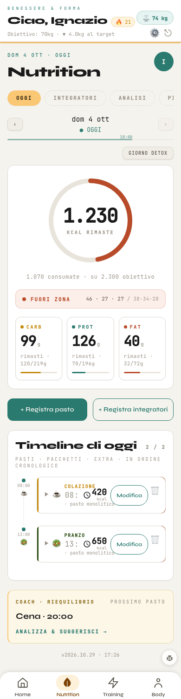

A sinistra la pagina vera con la veste A accesa, fotografata dal banco a 390 px: la barra in basso c'è già, il resto è com'era. A destra lo schizzo con le regole di pagina della Home e della Seduta. Stessi dati, stessi tasti, stessi passaggi; nessuna logica nuova. I numeri gialli sono cose da snellire nel giro 2, segnate ma non fatte.
Cosa cambia e perché
La testata della zona Nutrition (#A35F00, scritte bianche) prende il posto di «Benessere & Forma · Ciao, Ignazio», come nella Seduta: dentro i tasti di quella intestazione (fuoco, peso, Impostazioni, Esci), la data, il titolo a 24 px, il giorno con ‹ ›, «Giorno detox» e le quattro schede Oggi · Integratori · Analisi · Piano.
Il giorno in un gruppo solo: l'anello con le calorie rimaste, consumate e obiettivo accanto, la zona, e i tre macro in una riga con la loro barretta.
Un tasto principale largo, «+ Registra pasto», nel colore della zona; «+ Registra integratori» è il secondo tasto, grigio chiaro, sotto.
La timeline a righe con il titolo di sezione fuori dal riquadro: ora, pasto, kcal, «Modifica» e il cestino alti 44 px.
Il coach in fondo, come una riga con la freccia: «Cena · 20:00 · Analizza e suggerisci».
Prima · veste A accesa

Dopo · schizzo
Dom 4 ott · oggi
🔥 21⚖ 74 kg⚙⎋3
Nutrition
‹dom 4 ottOGGI · 18:00›
Giorno detox4
OggiIntegratoriAnalisiPiano
Il giorno su 2.300 kcal1
1.230RIMASTE
1.070 consumate su 2.300 di obiettivo ● FUORI ZONA · 46·27·27 / 38·34·28
CARB99 grimasti · 120/219 g
PROT126 grimasti · 70/196 g
FAT40 grimasti · 32/72 g
Timeline di oggi 2 / 22
08:00COLAZIONE☕ pasto monolitico420 kcalModifica🗑
13:00PRANZO🥗 pasto monolitico650 kcalModifica🗑
Coach · riequilibrio prossimo pasto
Cena · 20:00Analizza e suggerisci›
Home
Nutrition
Training
Body
Da snellire nel giro 2
Il giorno dice le calorie tre volte (rimaste, consumate, obiettivo) e i macro due (rimasti e «120/219 g»): basta una lettura.
«Pasti · pacchetti · extra · in ordine cronologico» e «pasto monolitico» sono parole da sviluppatore: si possono togliere o dire meglio.
L'intestazione con fuoco, peso, Impostazioni ed Esci si ripete in ogni pagina: forse basta in Home.
«Giorno detox» è un interruttore che si usa di rado: può stare dentro il Piano o nelle Impostazioni.
Quando si costruisce
Tutto dietro html.v5, come Home e Seduta: a veste spenta il tab resta identico al pixel. Il colore c'è già (--z-nutrition). La testata e i titoli di sezione vanno nell'HTML di nutrition.js solo a veste accesa, come per la Seduta; il resto con lo stile.